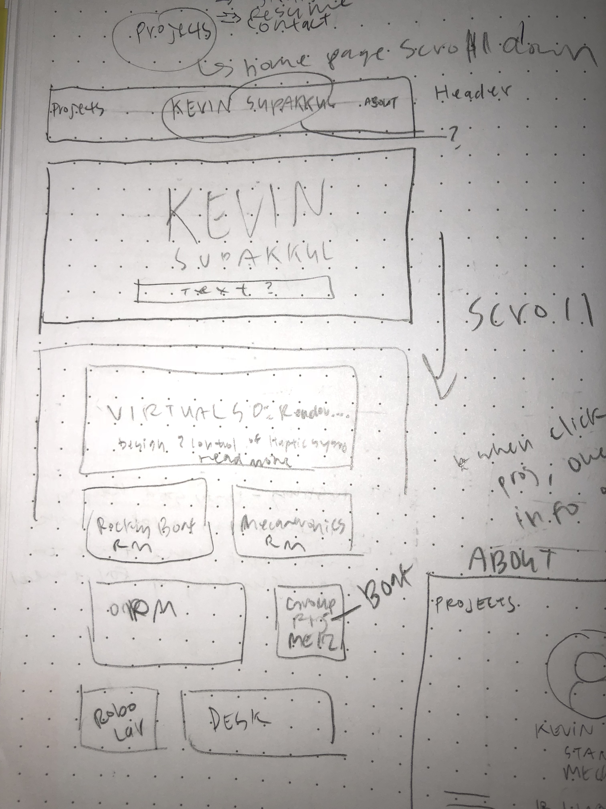
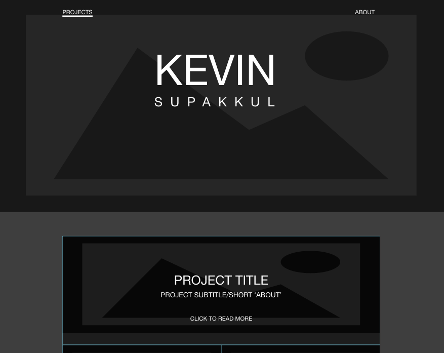
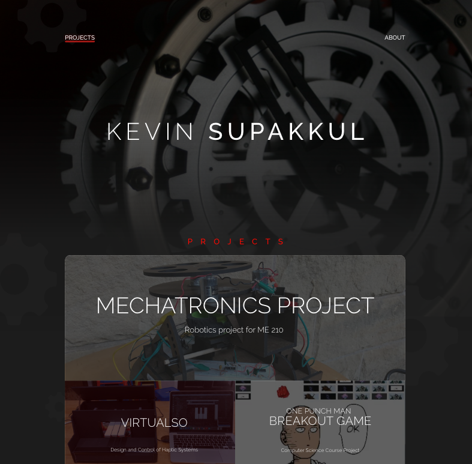
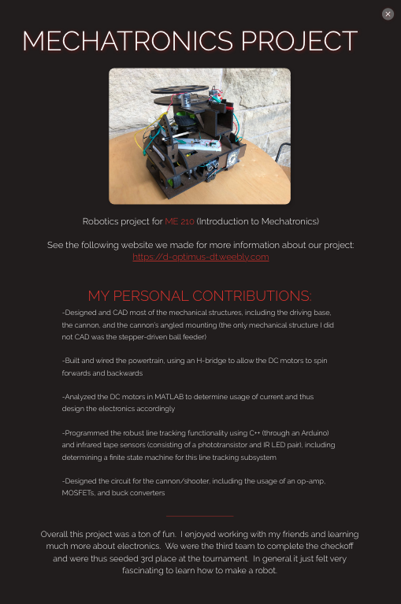
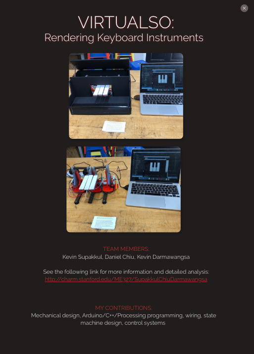
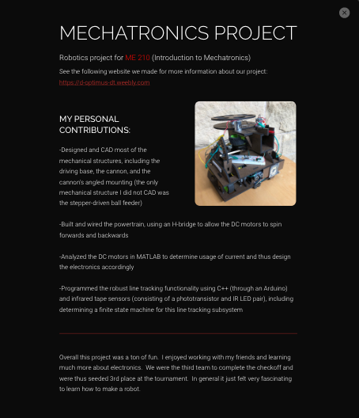
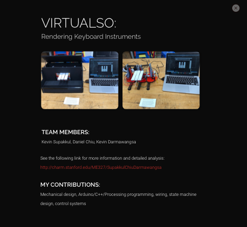

Mechanical Engineer: Portfolio Design
Redesigning to better personalize and showcase notable work to other professionals.

OVERVIEW
I took on the task of redesigning Kevin Supakkul’s mechanical engineering portfolio. Kevin wanted a platform on which he could display his projects and share them with potential employers and recruiters for engineering companies. Originally, he had been using a free blogging website as a means of compiling his work and voiced to me that, while the site’s functionality met his needs, he wanted to improve the website’s visuals.
ROLE
UI/UX Designer
DURATION
3 weeks
THE PROCESS
Defining + initial thoughts
Since this portfolio would be shared with professionals, Kevin and I decided we should go for a classy, sophisticated feel. With this in mind, I went with an overall dark grey color, Raleway font for titles, and Roboto font for descriptions. I decided to use a background image with dark overlay to give off the classiness we wanted and to more easily distinguish the text on top. For the image, I settled on a gear-faced watch image-- the gears represent a typical piece of hardware associated with mechanical engineering and the watch represents Kevin’s appreciation for the timepieces.
Design Process
I began by ideating and making low-fidelity sketches in my notebook and mid-fidelity mock-ups using Adobe XD. I then moved on to creating a high-fidelity prototype in Adobe XD.
Sketch Sample:
Lo-fi Sample:
Hi-fi Sample:
In the previous design, the 'About' page was not only void of information, but also had a layout that was difficult to apply to a career-type profile. I redesigned the page in a way that would showcase Kevin’s skills, background, and contact information so his information would be easily accessible by recruiters.
Before:

Sketch+Wireframe:


After:

I also found it difficult to navigate and see Kevin’s projects in the previous website because of the blog-post style layout. Because of this, I opted for a clickable block to display pictures and titles of the projects. I also envisioned using CSS to overlay a short description of the project over the image as the user’s mouse hovers on top of the project’s section.


I went through 2 different versions of the projects’ information pages. The first version appeared to be not very professional, so I decided to reduce the use of the red accent, align the text to the left instead of in the center, and use more variations of font weights. Additionally, in the first version, the entire page was written using the Raleway font, but for the second version, I decided to just keep Raleway for the titles and change the paragraphs to Roboto for a cleaner typeface and reduce the monotony of the page.
Version 1:
 Version 2:
 REFLECTIONS
From this project, I learned that often times, less is more. I experimented a lot with the landing page, always trying to add more because I felt as if something was missing. In the end, I deleted a lot of “fluff”, changed a few color tones and gradients here and there, and the design I was most pleased with ended up being the simplest one. As one of my first design projects, I learned a lot from this and, of course, have much room for improvement. With more time and experience, I would like to experiment with more layouts (especially for the project descriptions) to find more fitting and professional visuals.